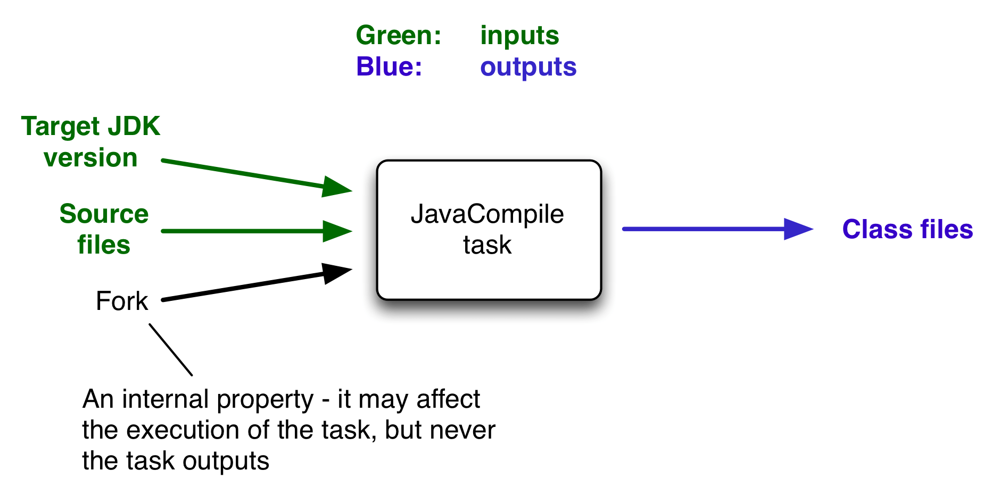

Incremental build
An important part of any build tool is the ability to avoid doing work that has already been done. Consider the process of compilation. Once your source files have been compiled, there should be no need to recompile them unless something has changed that affects the output, such as the modification of a source file or the removal of an output file. And compilation can take a significant amount of time, so skipping the step when it’s not needed saves a lot of time.
Gradle supports this behavior out of the box through a feature called incremental build.
You have almost certainly already seen it in action.
When you run a task and the task is marked with UP-TO-DATE in the console output, this means incremental build is at work.
How does an incremental build work? How can you make sure your tasks support running incrementally? Let’s take a look.
Task inputs and outputs
In the most common case, a task takes some inputs and generates some outputs. We can consider the process of Java compilation as an example of a task. The Java source files act as inputs of the task, while the generated class files, i.e. the result of the compilation, are the outputs of the task.

An important characteristic of an input is that it affects one or more outputs, as you can see from the previous figure. Different bytecode is generated depending on the content of the source files and the minimum version of the Java runtime you want to run the code on. That makes them task inputs. But whether compilation has 500MB or 600MB of maximum memory available, determined by the memoryMaximumSize property, has no impact on what bytecode gets generated. In Gradle terminology, memoryMaximumSize is just an internal task property.
As part of incremental build, Gradle tests whether any of the task inputs or outputs has changed since the last build. If they haven’t, Gradle can consider the task up to date and therefore skip executing its actions. Also note that incremental build won’t work unless a task has at least one task output, although tasks usually have at least one input as well.
What this means for build authors is simple: you need to tell Gradle which task properties are inputs and which are outputs. If a task property affects the output, be sure to register it as an input, otherwise the task will be considered up to date when it’s not. Conversely, don’t register properties as inputs if they don’t affect the output, otherwise the task will potentially execute when it doesn’t need to. Also be careful of non-deterministic tasks that may generate different output for exactly the same inputs: these should not be configured for incremental build as the up-to-date checks won’t work.
Let’s now look at how you can register task properties as inputs and outputs.
Declaring inputs and outputs via annotations
If you’re implementing a custom task as a class, then it takes just two steps to make it work with incremental build:
-
Create typed properties (via getter methods) for each of your task inputs and outputs
-
Add the appropriate annotation to each of those properties
| Annotations must be placed on getters or on Groovy properties. Annotations placed on setters, or on a Java field without a corresponding annotated getter, are ignored. |
Gradle supports four main categories of inputs and outputs:
-
Simple values
Things like strings and numbers. More generally, a simple value can have any type that implements
Serializable. -
Filesystem types
These consist of
RegularFile,Directoryand the standardFileclass but also derivatives of Gradle’s FileCollection type and anything else that can be passed to either the Project.file(java.lang.Object) method — for single file/directory properties — or the Project.files(java.lang.Object...) method. -
Dependency resolution results
This includes the ResolvedArtifactResult type for artifact metadata and the ResolvedComponentResult type for dependency graphs. Note that they are only supported wrapped in a
Provider. -
Nested values
Custom types that don’t conform to the other two categories but have their own properties that are inputs or outputs. In effect, the task inputs or outputs are nested inside these custom types.
As an example, imagine you have a task that processes templates of varying types, such as FreeMarker, Velocity, Moustache, etc. It takes template source files and combines them with some model data to generate populated versions of the template files.
This task will have three inputs and one output:
-
Template source files
-
Model data
-
Template engine
-
Where the output files are written
When you’re writing a custom task class, it’s easy to register properties as inputs or outputs via annotations. To demonstrate, here is a skeleton task implementation with some suitable inputs and outputs, along with their annotations:
package org.example;
import java.util.HashMap;
import org.gradle.api.DefaultTask;
import org.gradle.api.file.ConfigurableFileCollection;
import org.gradle.api.file.DirectoryProperty;
import org.gradle.api.file.FileSystemOperations;
import org.gradle.api.provider.Property;
import org.gradle.api.tasks.*;
import javax.inject.Inject;
public abstract class ProcessTemplates extends DefaultTask {
@Input
public abstract Property<TemplateEngineType> getTemplateEngine();
@InputFiles
public abstract ConfigurableFileCollection getSourceFiles();
@Nested
public abstract TemplateData getTemplateData();
@OutputDirectory
public abstract DirectoryProperty getOutputDir();
@Inject
public abstract FileSystemOperations getFs();
@TaskAction
public void processTemplates() {
// ...
}
}package org.example;
import org.gradle.api.provider.MapProperty;
import org.gradle.api.provider.Property;
import org.gradle.api.tasks.Input;
public abstract class TemplateData {
@Input
public abstract Property<String> getName();
@Input
public abstract MapProperty<String, String> getVariables();
}$ ./gradlew processTemplates> Task :processTemplates
BUILD SUCCESSFUL in 0s
3 actionable tasks: 3 up-to-date$ ./gradlew processTemplates> Task :processTemplates UP-TO-DATE
BUILD SUCCESSFUL in 0s
3 actionable tasks: 3 up-to-dateThere’s plenty to talk about in this example, so let’s work through each of the input and output properties in turn:
-
templateEngineRepresents which engine to use when processing the source templates, e.g. FreeMarker, Velocity, etc. You could implement this as a string, but in this case we have gone for a custom enum as it provides greater type information and safety. Since enums implement
Serializableautomatically, we can treat this as a simple value and use the@Inputannotation, just as we would with aStringproperty. -
sourceFilesThe source templates that the task will be processing. Single files and collections of files need their own special annotations. In this case, we’re dealing with a collection of input files and so we use the
@InputFilesannotation. You’ll see more file-oriented annotations in a table later. -
templateDataFor this example, we’re using a custom class to represent the model data. However, it does not implement
Serializable, so we can’t use the@Inputannotation. That’s not a problem as the properties withinTemplateData— a string and a hash map with serializable type parameters — are serializable and can be annotated with@Input. We use@NestedontemplateDatato let Gradle know that this is a value with nested input properties. -
outputDirThe directory where the generated files go. As with input files, there are several annotations for output files and directories. A property representing a single directory requires
@OutputDirectory. You’ll learn about the others soon.
These annotated properties mean that Gradle will skip the task if none of the source files, template engine, model data or generated files has changed since the previous time Gradle executed the task. This will often save a significant amount of time. You can learn how Gradle detects changes later.
This example is particularly interesting because it works with collections of source files. What happens if only one source file changes? Does the task process all the source files again or just the modified one? That depends on the task implementation. If the latter, then the task itself is incremental, but that’s a different feature to the one we’re discussing here. Gradle does help task implementers with this via its incremental task inputs feature.
Now that you have seen some of the input and output annotations in practice, let’s take a look at all the annotations available to you and when you should use them. The table below lists the available annotations and the corresponding property type you can use with each one.
| Annotation | Expected property type | Description |
|---|---|---|
Any |
A simple input value or dependency resolution results |
|
|
A single input file (not directory) |
|
|
A single input directory (not file) |
|
|
An iterable of input files and directories. The order of the files is not considered for up-to-date checks. |
|
|
An iterable of input files and directories that represent a Java classpath. This allows the task to ignore irrelevant changes to the property, such as different names for the same files. It is similar to annotating the property Note: The |
|
|
An iterable of input files and directories that represent a Java compile classpath. This allows the task to ignore irrelevant changes that do not affect the API of the classes in classpath. See also Using the classpath annotations. The following kinds of changes to the classpath will be ignored:
NOTE - The |
|
|
A single output file (not directory) |
|
|
A single output directory (not file) |
|
|
An iterable or map of output files. Using a file tree turns caching off for the task. |
|
|
An iterable of output directories. Using a file tree turns caching off for the task. |
|
|
Specifies one or more files that are removed by this task. Note that a task can define either inputs/outputs or destroyables, but not both. |
|
|
Specifies one or more files that represent the local state of the task. These files are removed when the task is loaded from cache. |
|
Any custom type |
A custom type that may not implement |
|
Any type |
Indicates that the property is neither an input nor an output. It simply affects the console output of the task in some way, such as increasing or decreasing the verbosity of the task. |
|
Any type |
Indicates that the property is used internally but is neither an input nor an output. |
|
Any type |
Indicates that the property has been replaced by another and should be ignored as an input or output. |
|
|
Used with Implies |
|
|
Used with |
|
Any type |
Used with any of the property type annotations listed in the Optional API documentation. This annotation disables validation checks on the corresponding property. See the section on validation for more details. |
|
|
||
|
Used with |
|
|
Used with |
|
Similar to the above, |
Annotations are inherited from all parent types including implemented interfaces. Property type annotations override any other property type annotation declared in a parent type. This way an @InputFile property can be turned into an @InputDirectory property in a child task type.
Annotations on a property declared in a type override similar annotations declared by the superclass and in any implemented interfaces. Superclass annotations take precedence over annotations declared in implemented interfaces.
The Console and Internal annotations in the table are special cases as they don’t declare either task inputs or task outputs. So why use them? It’s so that you can take advantage of the Java Gradle Plugin Development plugin to help you develop and publish your own plugins. This plugin checks whether any properties of your custom task classes lack an incremental build annotation. This protects you from forgetting to add an appropriate annotation during development.
Using the classpath annotations
Besides @InputFiles, for JVM-related tasks Gradle understands the concept of classpath inputs. Both runtime and compile classpaths are treated differently when Gradle is looking for changes.
As opposed to input properties annotated with @InputFiles, for classpath properties the order of the entries in the file collection matter.
On the other hand, the names and paths of the directories and jar files on the classpath itself are ignored.
Timestamps and the order of class files and resources inside jar files on a classpath are ignored, too, thus recreating a jar file with different file dates will not make the task out of date.
Runtime classpaths are marked with @Classpath, and they offer further customization via classpath normalization.
Input properties annotated with @CompileClasspath are considered Java compile classpaths.
Additionally to the aforementioned general classpath rules, compile classpaths ignore changes to everything but class files. Gradle uses the same class analysis described in Java compile avoidance to further filter changes that don’t affect the class' ABIs.
This means that changes which only touch the implementation of classes do not make the task out of date.
Nested inputs
When analyzing @Nested task properties for declared input and output sub-properties Gradle uses the type of the actual value.
Hence it can discover all sub-properties declared by a runtime sub-type.
When adding @Nested to an iterable, each element is treated as a separate nested input.
Each nested input in the iterable is assigned a name, which by default is the dollar sign followed by the index in the iterable, e.g. $2.
If an element of the iterable implements Named, then the name is used as property name.
The ordering of the elements in the iterable is crucial for reliable up-to-date checks and caching if not all of the elements implement Named.
Multiple elements which have the same name are not allowed.
When adding @Nested to a map, then for each value a nested input is added, using the key as name.
The type and classpath of nested inputs is tracked, too.
This ensures that changes to the implementation of a nested input causes the build to be out of date.
By this it is also possible to add user provided code as an input, e.g. by annotating an @Action property with @Nested.
Note that any inputs to such actions should be tracked, either by annotated properties on the action or by manually registering them with the task.
Using nested inputs allows richer modeling and extensibility for tasks, as e.g. shown by Test.getJvmArgumentProviders().
This allows us to model the JaCoCo Java agent, thus declaring the necessary JVM arguments and providing the inputs and outputs to Gradle:
class JacocoAgent implements CommandLineArgumentProvider {
private final JacocoTaskExtension jacoco;
public JacocoAgent(JacocoTaskExtension jacoco) {
this.jacoco = jacoco;
}
@Nested
@Optional
public JacocoTaskExtension getJacoco() {
return jacoco.isEnabled() ? jacoco : null;
}
@Override
public Iterable<String> asArguments() {
return jacoco.isEnabled() ? ImmutableList.of(jacoco.getAsJvmArg()) : Collections.<String>emptyList();
}
}
test.getJvmArgumentProviders().add(new JacocoAgent(extension));For this to work, JacocoTaskExtension needs to have the correct input and output annotations.
The approach works for Test JVM arguments, since Test.getJvmArgumentProviders() is an Iterable annotated with @Nested.
There are other task types where this kind of nested inputs are available:
-
JavaExec.getArgumentProviders() - model e.g. custom tools
-
JavaExec.getJvmArgumentProviders() - used for Jacoco Java agent
-
CompileOptions.getCompilerArgumentProviders() - model e.g. annotation processors
-
Exec.getArgumentProviders() - model e.g. custom tools
-
JavaCompile.getOptions().getForkOptions().getJvmArgumentProviders() - model Java compiler daemon command line arguments
-
GroovyCompile.getGroovyOptions().getForkOptions().getJvmArgumentProviders() - model Groovy compiler daemon command line arguments
-
ScalaCompile.getScalaOptions().getForkOptions().getJvmArgumentProviders() - model Scala compiler daemon command line arguments
In the same way, this kind of modelling is available to custom tasks.
Validation at runtime
When executing the build Gradle checks if task types are declared with the proper annotations. It tries to identify problems where e.g. annotations are used on incompatible types, or on setters etc. Any getter not annotated with an input/output annotation is also flagged. These problems then fail the build or are turned into deprecation warnings when the task is executed.
Tasks that have a validation warning are executed without any optimizations. Specifically, they never can be:
-
up-to-date,
-
loaded from or stored in the build cache,
-
executed in parallel with other tasks, even if parallel execution is enabled,
-
executed incrementally.
The in-memory representation of the file system state (Virtual File System) is also invalidated before an invalid task is executed.
Declaring inputs and outputs via the runtime API
Custom task classes are an easy way to bring your own build logic into the arena of incremental build, but you don’t always have that option. That’s why Gradle also provides an alternative API that can be used with any tasks, which we look at next.
When you don’t have access to the source for a custom task class, there is no way to add any of the annotations we covered in the previous section. Fortunately, Gradle provides a runtime API for scenarios just like that. It can also be used for ad-hoc tasks, as you’ll see next.
Declaring inputs and outputs of ad-hoc tasks
This runtime API is provided through a couple of aptly named properties that are available on every Gradle task:
-
Task.getInputs() of type TaskInputs
-
Task.getOutputs() of type TaskOutputs
These objects have methods that allow you to specify files, directories and values which constitute the task’s inputs and outputs. In fact, the runtime API has almost feature parity with the annotations.
It lacks equivalents for
Let’s take the template processing example from before and see how it would look as an ad-hoc task that uses the runtime API:
tasks.register("processTemplatesAdHoc") {
inputs.property("engine", TemplateEngineType.FREEMARKER)
inputs.files(fileTree("src/templates"))
.withPropertyName("sourceFiles")
.withPathSensitivity(PathSensitivity.RELATIVE)
inputs.property("templateData.name", "docs")
inputs.property("templateData.variables", mapOf("year" to "2013"))
outputs.dir(layout.buildDirectory.dir("genOutput2"))
.withPropertyName("outputDir")
doLast {
// Process the templates here
}
}tasks.register('processTemplatesAdHoc') {
inputs.property('engine', TemplateEngineType.FREEMARKER)
inputs.files(fileTree('src/templates'))
.withPropertyName('sourceFiles')
.withPathSensitivity(PathSensitivity.RELATIVE)
inputs.property('templateData.name', 'docs')
inputs.property('templateData.variables', [year: '2013'])
outputs.dir(layout.buildDirectory.dir('genOutput2'))
.withPropertyName('outputDir')
doLast {
// Process the templates here
}
}$ ./gradlew processTemplatesAdHoc> Task :processTemplatesAdHoc
BUILD SUCCESSFUL in 0s
3 actionable tasks: 3 executedAs before, there’s much to talk about. To begin with, you should really write a custom task class for this as it’s a non-trivial implementation that has several configuration options. In this case, there are no task properties to store the root source folder, the location of the output directory or any of the other settings. That’s deliberate to highlight the fact that the runtime API doesn’t require the task to have any state. In terms of incremental build, the above ad-hoc task will behave the same as the custom task class.
All the input and output definitions are done through the methods on inputs and outputs, such as property(), files(), and dir().
Gradle performs up-to-date checks on the argument values to determine whether the task needs to run again or not.
Each method corresponds to one of the incremental build annotations, for example inputs.property() maps to @Input and outputs.dir() maps to @OutputDirectory.
The files that a task removes can be specified through destroyables.register().
tasks.register("removeTempDir") {
val tmpDir = layout.projectDirectory.dir("tmpDir")
destroyables.register(tmpDir)
doLast {
tmpDir.asFile.deleteRecursively()
}
}tasks.register('removeTempDir') {
def tempDir = layout.projectDirectory.dir('tmpDir')
destroyables.register(tempDir)
doLast {
tempDir.asFile.deleteDir()
}
}One notable difference between the runtime API and the annotations is the lack of a method that corresponds directly to @Nested. That’s why the example uses two property() declarations for the template data, one for each TemplateData property. You should utilize the same technique when using the runtime API with nested values. Any given task can either declare destroyables or inputs/outputs, but cannot declare both.
Fine-grained configuration
The runtime API methods only allow you to declare your inputs and outputs in themselves. However, the file-oriented ones return a builder — of type TaskInputFilePropertyBuilder — that lets you provide additional information about those inputs and outputs.
You can learn about all the options provided by the builder in its API documentation, but we’ll show you a simple example here to give you an idea of what you can do.
Let’s say we don’t want to run the processTemplates task if there are no source files, regardless of whether it’s a clean build or not. After all, if there are no source files, there’s nothing for the task to do. The builder allows us to configure this like so:
tasks.register("processTemplatesAdHocSkipWhenEmpty") {
// ...
inputs.files(fileTree("src/templates") {
include("**/*.fm")
})
.skipWhenEmpty()
.withPropertyName("sourceFiles")
.withPathSensitivity(PathSensitivity.RELATIVE)
.ignoreEmptyDirectories()
// ...
}tasks.register('processTemplatesAdHocSkipWhenEmpty') {
// ...
inputs.files(fileTree('src/templates') {
include '**/*.fm'
})
.skipWhenEmpty()
.withPropertyName('sourceFiles')
.withPathSensitivity(PathSensitivity.RELATIVE)
.ignoreEmptyDirectories()
// ...
}$ ./gradlew clean processTemplatesAdHocSkipWhenEmpty> Task :processTemplatesAdHocSkipWhenEmpty NO-SOURCE
BUILD SUCCESSFUL in 0s
3 actionable tasks: 2 executed, 1 up-to-dateThe TaskInputs.files() method returns a builder that has a skipWhenEmpty() method. Invoking this method is equivalent to annotating to the property with @SkipWhenEmpty.
Now that you have seen both the annotations and the runtime API, you may be wondering which API you should be using. Our recommendation is to use the annotations wherever possible, and it’s sometimes worth creating a custom task class just so that you can make use of them. The runtime API is more for situations in which you can’t use the annotations.
Declaring inputs and outputs for custom task types
Another type of example involves registering additional inputs and outputs for instances of a custom task class.
For example, imagine that the ProcessTemplates task also needs to read src/headers/headers.txt (e.g. because it is included from one of the sources).
You’d want Gradle to know about this input file, so that it can re-execute the task whenever the contents of this file change.
With the runtime API you can do just that:
tasks.register<ProcessTemplates>("processTemplatesWithExtraInputs") {
// ...
inputs.file("src/headers/headers.txt")
.withPropertyName("headers")
.withPathSensitivity(PathSensitivity.NONE)
}tasks.register('processTemplatesWithExtraInputs', ProcessTemplates) {
// ...
inputs.file('src/headers/headers.txt')
.withPropertyName('headers')
.withPathSensitivity(PathSensitivity.NONE)
}Using the runtime API like this is a little like using doLast() and doFirst() to attach extra actions to a task, except in this case we’re attaching information about inputs and outputs.
| If the task type is already using the incremental build annotations, registering inputs or outputs with the same property names will result in an error. |
Benefits of declaring task inputs and outputs
Once you declare a task’s formal inputs and outputs, Gradle can then infer things about those properties. For example, if an input of one task is set to the output of another, that means the first task depends on the second, right? Gradle knows this and can act upon it.
We’ll look at this feature next and also some other features that come from Gradle knowing things about inputs and outputs.
Inferred task dependencies
Consider an archive task that packages the output of the processTemplates task. A build author will see that the archive task obviously requires processTemplates to run first and so may add an explicit dependsOn. However, if you define the archive task like so:
tasks.register<Zip>("packageFiles") {
from(processTemplates.map { it.outputDir })
}tasks.register('packageFiles', Zip) {
from processTemplates.map { it.outputDir }
}$ ./gradlew clean packageFiles> Task :processTemplates
> Task :packageFiles
BUILD SUCCESSFUL in 0s
5 actionable tasks: 4 executed, 1 up-to-dateGradle will automatically make packageFiles depend on processTemplates. It can do this because it’s aware that one of the inputs of packageFiles requires the output of the processTemplates task. We call this an inferred task dependency.
The above example can also be written as
tasks.register<Zip>("packageFiles2") {
from(processTemplates)
}tasks.register('packageFiles2', Zip) {
from processTemplates
}$ ./gradlew clean packageFiles2> Task :processTemplates
> Task :packageFiles2
BUILD SUCCESSFUL in 0s
5 actionable tasks: 4 executed, 1 up-to-dateThis is because the from() method can accept a task object as an argument. Behind the scenes, from() uses the project.files() method to wrap the argument, which in turn exposes the task’s formal outputs as a file collection. In other words, it’s a special case!
Input and output validation
The incremental build annotations provide enough information for Gradle to perform some basic validation on the annotated properties. In particular, it does the following for each property before the task executes:
-
@InputFile- verifies that the property has a value and that the path corresponds to a file (not a directory) that exists. -
@InputDirectory- same as for@InputFile, except the path must correspond to a directory. -
@OutputDirectory- verifies that the path doesn’t match a file and also creates the directory if it doesn’t already exist.
If one task produces an output in a location and another task consumes that location by referring to it as an input, then Gradle checks that the consumer task depends on the producer task. When the producer and the consumer tasks are executing at the same time, the build fails to avoid capturing an incorrect state.
Such validation improves the robustness of the build, allowing you to identify issues related to inputs and outputs quickly.
You will occasionally want to disable some of this validation, specifically when an input file may validly not exist. That’s why Gradle provides the @Optional annotation: you use it to tell Gradle that a particular input is optional and therefore the build should not fail if the corresponding file or directory doesn’t exist.
Continuous build
Another benefit of defining task inputs and outputs is continuous build. Since Gradle knows what files a task depends on, it can automatically run a task again if any of its inputs change. By activating continuous build when you run Gradle — through the --continuous or -t options — you will put Gradle into a state in which it continually checks for changes and executes the requested tasks when it encounters such changes.
You can find out more about this feature in Continuous build.
Task parallelism
One last benefit of defining task inputs and outputs is that Gradle can use this information to make decisions about how to run tasks when the "--parallel" option is used. For instance, Gradle will inspect the outputs of tasks when selecting the next task to run and will avoid concurrent execution of tasks that write to the same output directory. Similarly, Gradle will use the information about what files a task destroys (e.g. specified by the Destroys annotation) and avoid running a task that removes a set of files while another task is running that consumes or creates those same files (and vice versa). It can also determine that a task that creates a set of files has already run and that a task that consumes those files has yet to run and will avoid running a task that removes those files in between. By providing task input and output information in this way, Gradle can infer creation/consumption/destruction relationships between tasks and can ensure that task execution does not violate those relationships.
How does it work?
Before a task is executed for the first time, Gradle takes a fingerprint of the inputs. This fingerprint contains the paths of input files and a hash of the contents of each file. Gradle then executes the task. If the task completes successfully, Gradle takes a fingerprint of the outputs. This fingerprint contains the set of output files and a hash of the contents of each file. Gradle persists both fingerprints for the next time the task is executed.
Each time after that, before the task is executed, Gradle takes a new fingerprint of the inputs and outputs. If the new fingerprints are the same as the previous fingerprints, Gradle assumes that the outputs are up to date and skips the task. If they are not the same, Gradle executes the task. Gradle persists both fingerprints for the next time the task is executed.
If the stats of a file (i.e. lastModified and size) did not change, Gradle will reuse the file’s fingerprint from the previous run.
That means that Gradle does not detect changes when the stats of a file did not change.
Gradle also considers the code of the task as part of the inputs to the task. When a task, its actions, or its dependencies change between executions, Gradle considers the task as out-of-date.
Gradle understands if a file property (e.g. one holding a Java classpath) is order-sensitive. When comparing the fingerprint of such a property, even a change in the order of the files will result in the task becoming out-of-date.
Note that if a task has an output directory specified, any files added to that directory since the last time it was executed are ignored and will NOT cause the task to be out of date. This is so unrelated tasks may share an output directory without interfering with each other. If this is not the behaviour you want for some reason, consider using TaskOutputs.upToDateWhen(groovy.lang.Closure)
Note also that changing the availability of an unavailable file (e.g. modifying the target of a broken symlink to a valid file, or vice versa), will be detected and handled by up-to-date check.
The inputs for the task are also used to calculate the build cache key used to load task outputs when enabled. For more details see Task output caching.
For tracking the implementation of tasks, task actions and nested inputs, Gradle uses the class name and an identifier for the classpath which contains the implementation. There are some situations when Gradle is not able to track the implementation precisely:
- Unknown classloader
-
When the classloader which loaded the implementation has not been created by Gradle, the classpath cannot be determined.
- Java lambda
-
Java lambda classes are created at runtime with a non-deterministic classname. Therefore, the class name does not identify the implementation of the lambda and changes between different Gradle runs.
When the implementation of a task, task action or a nested input cannot be tracked precisely, Gradle disables any caching for the task. That means that the task will never be up-to-date or loaded from the build cache.
Advanced techniques
Everything you’ve seen so far in this section will cover most of the use cases you’ll encounter, but there are some scenarios that need special treatment. We’ll present a few of those next with the appropriate solutions.
Adding your own cached input/output methods
Have you ever wondered how the from() method of the Copy task works? It’s not annotated with @InputFiles and yet any files passed to it are treated as formal inputs of the task. What’s happening?
The implementation is quite simple and you can use the same technique for your own tasks to improve their APIs. Write your methods so that they add files directly to the appropriate annotated property. As an example, here’s how to add a sources() method to the custom ProcessTemplates class we introduced earlier:
tasks.register<ProcessTemplates>("processTemplates") {
templateEngine = TemplateEngineType.FREEMARKER
templateData.name = "test"
templateData.variables = mapOf("year" to "2012")
outputDir = layout.buildDirectory.dir("genOutput")
sources(fileTree("src/templates"))
}tasks.register('processTemplates', ProcessTemplates) {
templateEngine = TemplateEngineType.FREEMARKER
templateData.name = 'test'
templateData.variables = [year: '2012']
outputDir = file(layout.buildDirectory.dir('genOutput'))
sources fileTree('src/templates')
}public abstract class ProcessTemplates extends DefaultTask {
// ...
@SkipWhenEmpty
@InputFiles
@PathSensitive(PathSensitivity.NONE)
public abstract ConfigurableFileCollection getSourceFiles();
public void sources(FileCollection sourceFiles) {
getSourceFiles().from(sourceFiles);
}
// ...
}$ ./gradlew processTemplates> Task :processTemplates
BUILD SUCCESSFUL in 0s
3 actionable tasks: 3 executedIn other words, as long as you add values and files to formal task inputs and outputs during the configuration phase, they will be treated as such regardless from where in the build you add them.
If we want to support tasks as arguments as well and treat their outputs as the inputs, we can use the TaskProvider directly like so:
val copyTemplates = tasks.register<Copy>("copyTemplates") {
into(file(layout.buildDirectory.dir("tmp")))
from("src/templates")
}
tasks.register<ProcessTemplates>("processTemplates2") {
// ...
sources(copyTemplates)
}def copyTemplates = tasks.register('copyTemplates', Copy) {
into file(layout.buildDirectory.dir('tmp'))
from 'src/templates'
}
tasks.register('processTemplates2', ProcessTemplates) {
// ...
sources copyTemplates
} // ...
public void sources(TaskProvider<?> inputTask) {
getSourceFiles().from(inputTask);
}
// ...$ ./gradlew processTemplates2> Task :copyTemplates
> Task :processTemplates2
BUILD SUCCESSFUL in 0s
4 actionable tasks: 4 executedThis technique can make your custom task easier to use and result in cleaner build files.
As an added benefit, our use of TaskProvider means that our custom method can set up an inferred task dependency.
One last thing to note: if you are developing a task that takes collections of source files as inputs, like this example, consider using the built-in SourceTask. It will save you having to implement some of the plumbing that we put into ProcessTemplates.
Linking an @OutputDirectory to an @InputFiles
When you want to link the output of one task to the input of another, the types often match and a simple property assignment will provide that link. For example, a File output property can be assigned to a File input.
Unfortunately, this approach breaks down when you want the files in a task’s @OutputDirectory (of type File) to become the source for another task’s @InputFiles property (of type FileCollection). Since the two have different types, property assignment won’t work.
As an example, imagine you want to use the output of a Java compilation task — via the destinationDir property — as the input of a custom task that instruments a set of files containing Java bytecode. This custom task, which we’ll call Instrument, has a classFiles property annotated with @InputFiles. You might initially try to configure the task like so:
plugins {
id("java-library")
}
tasks.register<Instrument>("badInstrumentClasses") {
classFiles.from(fileTree(tasks.compileJava.flatMap { it.destinationDirectory }))
destinationDir = layout.buildDirectory.dir("instrumented")
}plugins {
id 'java-library'
}
tasks.register('badInstrumentClasses', Instrument) {
classFiles.from fileTree(tasks.named('compileJava').flatMap { it.destinationDirectory }) {}
destinationDir = file(layout.buildDirectory.dir('instrumented'))
}$ ./gradlew clean badInstrumentClasses> Task :clean UP-TO-DATE
> Task :badInstrumentClasses NO-SOURCE
BUILD SUCCESSFUL in 0s
3 actionable tasks: 2 executed, 1 up-to-dateThere’s nothing obviously wrong with this code, but you can see from the console output that the compilation task is missing. In this case you would need to add an explicit task dependency between instrumentClasses and compileJava via dependsOn. The use of fileTree() means that Gradle can’t infer the task dependency itself.
One solution is to use the TaskOutputs.files property, as demonstrated by the following example:
tasks.register<Instrument>("instrumentClasses") {
classFiles.from(tasks.compileJava.map { it.outputs.files })
destinationDir = layout.buildDirectory.dir("instrumented")
}tasks.register('instrumentClasses', Instrument) {
classFiles.from tasks.named('compileJava').map { it.outputs.files }
destinationDir = file(layout.buildDirectory.dir('instrumented'))
}$ ./gradlew clean instrumentClasses> Task :clean UP-TO-DATE
> Task :compileJava
> Task :instrumentClasses
BUILD SUCCESSFUL in 0s
5 actionable tasks: 4 executed, 1 up-to-dateAlternatively, you can get Gradle to access the appropriate property itself by using one of project.files(), project.layout.files() or project.objects.fileCollection() in place of project.fileTree():
tasks.register<Instrument>("instrumentClasses2") {
classFiles.from(layout.files(tasks.compileJava))
destinationDir = layout.buildDirectory.dir("instrumented")
}tasks.register('instrumentClasses2', Instrument) {
classFiles.from layout.files(tasks.named('compileJava'))
destinationDir = file(layout.buildDirectory.dir('instrumented'))
}$ ./gradlew clean instrumentClasses2> Task :clean UP-TO-DATE
> Task :compileJava
> Task :instrumentClasses2
BUILD SUCCESSFUL in 0s
5 actionable tasks: 4 executed, 1 up-to-dateRemember that files(), layout.files() and objects.fileCollection() can take tasks as arguments, whereas fileTree() cannot.
The downside of this approach is that all file outputs of the source task become the input files of the target — instrumentClasses in this case. That’s fine as long as the source task only has a single file-based output, like the JavaCompile task. But if you have to link just one output property among several, then you need to explicitly tell Gradle which task generates the input files using the builtBy method:
tasks.register<Instrument>("instrumentClassesBuiltBy") {
classFiles.from(fileTree(tasks.compileJava.flatMap { it.destinationDirectory }) {
builtBy(tasks.compileJava)
})
destinationDir = layout.buildDirectory.dir("instrumented")
}tasks.register('instrumentClassesBuiltBy', Instrument) {
classFiles.from fileTree(tasks.named('compileJava').flatMap { it.destinationDirectory }) {
builtBy tasks.named('compileJava')
}
destinationDir = file(layout.buildDirectory.dir('instrumented'))
}$ ./gradlew clean instrumentClassesBuiltBy> Task :clean UP-TO-DATE
> Task :compileJava
> Task :instrumentClassesBuiltBy
BUILD SUCCESSFUL in 0s
5 actionable tasks: 4 executed, 1 up-to-dateYou can of course just add an explicit task dependency via dependsOn, but the above approach provides more semantic meaning, explaining why compileJava has to run beforehand.
Disabling up-to-date checks
Gradle automatically handles up-to-date checks for output files and directories, but what if the task output is something else entirely? Perhaps it’s an update to a web service or a database table. Or sometimes you have a task which should always run.
That’s where the doNotTrackState() method on Task comes in.
One can use this to disable up-to-date checks completely for a task, like so:
tasks.register<Instrument>("alwaysInstrumentClasses") {
classFiles.from(layout.files(tasks.compileJava))
destinationDir = layout.buildDirectory.dir("instrumented")
doNotTrackState("Instrumentation needs to re-run every time")
}tasks.register('alwaysInstrumentClasses', Instrument) {
classFiles.from layout.files(tasks.named('compileJava'))
destinationDir = file(layout.buildDirectory.dir('instrumented'))
doNotTrackState("Instrumentation needs to re-run every time")
}$ ./gradlew clean alwaysInstrumentClasses> Task :compileJava
> Task :alwaysInstrumentClasses
BUILD SUCCESSFUL in 0s
4 actionable tasks: 1 executed, 3 up-to-date$ ./gradlew alwaysInstrumentClasses> Task :compileJava UP-TO-DATE
> Task :alwaysInstrumentClasses
BUILD SUCCESSFUL in 0s
4 actionable tasks: 1 executed, 3 up-to-dateIf you are writing your own task that always should run, then you can also use the @UntrackedTask annotation on the task class instead of calling Task.doNotTrackState().
Integrate an external tool which does its own up-to-date checking
Sometimes you want to integrate an external tool like Git or Npm, both of which do their own up-to-date checking.
In that case it doesn’t make much sense for Gradle to also do up-to-date checks.
You can disable Gradle’s up-to-date checks by using the @UntrackedTask annotation on the task wrapping the tool.
Alternatively, you can use the runtime API method Task.doNotTrackState().
For example, let’s say you want to implement a task which clones a Git repository.
@UntrackedTask(because = "Git tracks the state") (1)
public abstract class GitClone extends DefaultTask {
@Input
public abstract Property<String> getRemoteUri();
@Input
public abstract Property<String> getCommitId();
@OutputDirectory
public abstract DirectoryProperty getDestinationDir();
@TaskAction
public void gitClone() throws IOException {
File destinationDir = getDestinationDir().get().getAsFile().getAbsoluteFile(); (2)
String remoteUri = getRemoteUri().get();
// Fetch origin or clone and checkout
// ...
}
}tasks.register<GitClone>("cloneGradleProfiler") {
destinationDir = layout.buildDirectory.dir("gradle-profiler") // <3
remoteUri = "https://github.com/gradle/gradle-profiler.git"
commitId = "d6c18a21ca6c45fd8a9db321de4478948bdf801b"
}tasks.register("cloneGradleProfiler", GitClone) {
destinationDir = layout.buildDirectory.dir("gradle-profiler") (3)
remoteUri = "https://github.com/gradle/gradle-profiler.git"
commitId = "d6c18a21ca6c45fd8a9db321de4478948bdf801b"
}| 1 | Declare the task as untracked. |
| 2 | Use the output directory to run the external tool. |
| 3 | Add the task and configure the output directory in your build. |
Configure input normalization
For up to date checks and the build cache Gradle needs to determine if two task input properties have the same value. In order to do so, Gradle first normalizes both inputs and then compares the result. For example, for a compile classpath, Gradle extracts the ABI signature from the classes on the classpath and then compares signatures between the last Gradle run and the current Gradle run as described in Java compile avoidance.
Normalization applies to all zip files on the classpath (e.g. jars, wars, aars, apks, etc). This allows Gradle to recognize when two zip files are functionally the same, even though the zip files themselves might be slightly different due to metadata (such as timestamps or file order). Normalization applies not only to zip files directly on the classpath, but also to zip files nested inside directories or inside other zip files on the classpath.
It is possible to customize Gradle’s built-in strategy for runtime classpath normalization.
All inputs annotated with @Classpath are considered to be runtime classpaths.
Let’s say you want to add a file build-info.properties to all your produced jar files which contains information about the build, e.g. the timestamp when the build started or some ID to identify the CI job that published the artifact.
This file is only for auditing purposes, and has no effect on the outcome of running tests.
Nonetheless, this file is part of the runtime classpath for the test task and changes on every build invocation.
Therefore, the test would be never up-to-date or pulled from the build cache.
In order to benefit from incremental builds again, you are able tell Gradle to ignore this file on the runtime classpath at the project level by using Project.normalization(org.gradle.api.Action) (in the consuming project):
normalization {
runtimeClasspath {
ignore("build-info.properties")
}
}normalization {
runtimeClasspath {
ignore 'build-info.properties'
}
}If adding such a file to your jar files is something you do for all of the projects in your build, and you want to filter this file for all consumers, you should consider configuring such normalization in a convention plugin to share it between subprojects.
The effect of this configuration would be that changes to build-info.properties would be ignored for up-to-date checks and build cache key calculations.
Note that this will not change the runtime behavior of the test task — i.e. any test is still able to load build-info.properties and the runtime classpath is still the same as before.
Properties file normalization
By default, properties files (i.e. files that end in a .properties extension) will be normalized to ignore differences in comments, whitespace and the order of properties.
Gradle does this by loading the properties files and only considering the individual properties during up-to-date checks or build cache key calculations.
It is sometimes the case, though, that certain properties have a runtime impact, while others do not. If a property is changing that does not have an impact on the runtime classpath, it may be desirable to exclude it from up-to-date checks and build cache key calculations. However, excluding the entire file would also exclude the properties that do have a runtime impact. In this case, properties can be excluded selectively from any or all properties files on the runtime classpath.
A rule for ignoring properties can be applied to a specific set of files using the patterns described in RuntimeClasspathNormalization. In the event that a file matches a rule, but cannot be loaded as a properties file (e.g. because it is not formatted properly or uses a non-standard encoding), it will be incorporated into the up-to-date or build cache key calculation as a normal file. In other words, if the file cannot be loaded as a properties file, any changes to whitespace, property order, or comments may cause the task to become out-of-date or cause a cache miss.
normalization {
runtimeClasspath {
properties("**/build-info.properties") {
ignoreProperty("timestamp")
}
}
}normalization {
runtimeClasspath {
properties('**/build-info.properties') {
ignoreProperty 'timestamp'
}
}
}normalization {
runtimeClasspath {
properties {
ignoreProperty("timestamp")
}
}
}normalization {
runtimeClasspath {
properties {
ignoreProperty 'timestamp'
}
}
}Java META-INF normalization
For files in the META-INF directory of jar archives it’s not always possible to ignore files completely due to their runtime impact.
Manifest files within META-INF are normalized to ignore comments, whitespace and order differences.
Manifest attribute names are compared case-and-order insensitively.
Manifest properties files are normalized according to Properties File Normalization.
META-INF manifest attributesnormalization {
runtimeClasspath {
metaInf {
ignoreAttribute("Implementation-Version")
}
}
}normalization {
runtimeClasspath {
metaInf {
ignoreAttribute("Implementation-Version")
}
}
}META-INF property keysnormalization {
runtimeClasspath {
metaInf {
ignoreProperty("app.version")
}
}
}normalization {
runtimeClasspath {
metaInf {
ignoreProperty("app.version")
}
}
}META-INF/MANIFEST.MFnormalization {
runtimeClasspath {
metaInf {
ignoreManifest()
}
}
}normalization {
runtimeClasspath {
metaInf {
ignoreManifest()
}
}
}normalization {
runtimeClasspath {
metaInf {
ignoreCompletely()
}
}
}normalization {
runtimeClasspath {
metaInf {
ignoreCompletely()
}
}
}Providing custom up-to-date logic
Gradle automatically handles up-to-date checks for output files and directories, but what if the task output is something else entirely? Perhaps it’s an update to a web service or a database table. Gradle has no way of knowing how to check whether the task is up to date in such cases.
That’s where the upToDateWhen() method on TaskOutputs comes in.
This takes a predicate function that is used to determine whether a task is up to date or not.
For example, you could read the version number of your database schema from the database.
Or, you could check whether a particular record in a database table exists or has changed for example.
Just be aware that up-to-date checks should save you time. Don’t add checks that cost as much or more time than the standard execution of the task. In fact, if a task ends up running frequently anyway, because it’s rarely up to date, then it may not be worth having no up-to-date checks at all as described in Disabling up-to-date checks. Remember that your checks will always run if the task is in the execution task graph.
One common mistake is to use upToDateWhen() instead of Task.onlyIf().
If you want to skip a task on the basis of some condition unrelated to the task inputs and outputs, then you should use onlyIf().
For example, in cases where you want to skip a task when a particular property is set or not set.
Stale task outputs
When the Gradle version changes, Gradle detects that outputs from tasks that ran with older versions of Gradle need to be removed to ensure that the newest version of the tasks are starting from a known clean state.
| Automatic clean-up of stale output directories has only been implemented for the output of source sets (Java/Groovy/Scala compilation). |